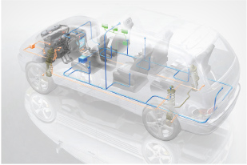
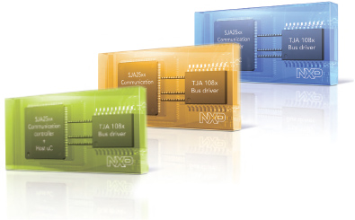
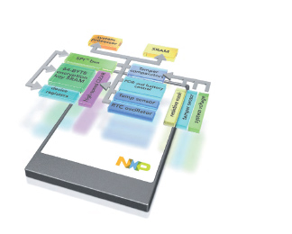
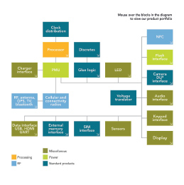
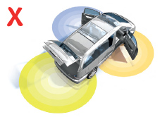
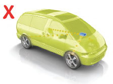
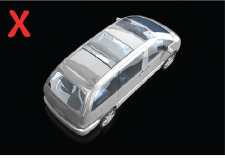

<!doctype html>
<html lang="en-US" prefix="og: http://ogp.me/ns#">
    <head>
        <meta charset="utf-8">
        <meta http-equiv="X-UA-Compatible" content="IE=edge">

        <title> &middot; Design elements | NXP Brand Guide</title>
        <meta name="description" content="">

       <!--  <link rel="stylesheet" href="../compiled.min.css" media="all"> -->
        <link rel="stylesheet" href="../style.css" media="all">
        <link rel="stylesheet" href="../inc/css/jquery.fancybox.css" media="screen">

        <!--[if gte IE 9]>
          <style type="text/css">
            .divider,
            .gradient {
               filter: none;
            }
          </style>
        <![endif]-->        

        <script type="text/javascript" src="../inc/js/jquery-1.10.1.min.js"></script>
        <script type="text/javascript" src="../inc/js/jquery.fancybox.js"></script>
        <script type="text/javascript" src="../inc/js/nxp-application.js"></script>

    </head>
    <body class="header-image full-width-content page-design-elements">

        <div class="site-container">

            <header class="site-header">
                <div class="wrap">

                    <div class="title-area">
                        <p class="site-title" itemprop="headline">
                            <a href="../" title="Site title - Home">NXP Brand Guide - Home</a>
                        </p>
                        <p class="site-description">Brand Guide</p>
                    </div><!-- .title-area -->
                    <div class="help-button">
                        <a href="mailto:identity@nxp.com" title="get support" class="general-cta"><span class="blocker">Support</span></a>
                    </div>
                    <p class="date-edited">Last edit: Thu, 20 Aug 2015 09:19:39 +0200</p>                </div><!-- .wrap -->
            </header><!-- .site-header -->

            <nav class="nav-primary" role="navigation" itemscope="itemscope" itemtype="http://schema.org/SiteNavigationElement">
                <div class="wrap">              

                    <ul class="nxp-nav-menu">
                        <li class="menu-item"><a href="../our-brand.html">Our brand</a></li><li class="menu-item current-menu-item"><a href="javascript:void(0)">Design elements</a><ul class="sub-menu"><li class="menu-item"><a href="../design-elements/logo.html">Logo</a></li><li class="menu-item"><a href="../design-elements/colors.html">Colors</a></li><li class="menu-item"><a href="../design-elements/typography.html">Typography</a></li><li class="menu-item"><a href="../design-elements/photography.html">Photography</a></li><li class="menu-item"><a href="../design-elements/icons.html">Icons</a></li></ul></li><li class="menu-item"><a href="javascript:void(0)">Print</a><ul class="sub-menu"><li class="menu-item"><a href="../print/stationery.html">Stationery</a></li></ul></li><li class="menu-item"><a href="javascript:void(0)">Digital / Online</a><ul class="sub-menu"><li class="menu-item"><a href="../digital-online/powerpoint.html">Powerpoint</a></li></ul></li><li class="menu-item"><a href="javascript:void(0)">Other</a><ul class="sub-menu"><li class="menu-item"><a href="../others/product-marking.html">Product marking</a></li><li class="menu-item"><a href="../others/packaging.html">Packaging</a></li></ul></li>                    </ul><!-- .nxp-nav-menu -->

                </div><!-- .wrap -->
            </nav><!-- .nav-primary -->


<section class="general-section mainvisual-section">
	
	<h1>Design elements <br /><span></span></h1>
</section>

<div class="site-inner">
	<div class="content-sidebar-wrap">
		<div class="content">
			<div class="entry-content">
				<p>Technical illustrations are used to visualize a process or complex system, or when photography isn’t appropriate. They are used on leaflets, brochures, posters, in PowerPoint presentations, movies and press articles. Use the basic ingredient: the Avenir font and colors from the defined palette of the NXP guidelines. On the following pages please find different examples of technical illustrations.</p>
			</div><!--- .entry-content -->
		</div><!--- .content -->
	</div><!--- .content-sidebar-wrap -->
</div><!--- .site-inner -->

<div class="divider"></div>
<div class="site-inner">
	<div class="content-sidebar-wrap">
		<div class="content">
			<div class="entry-content">
				<div class="print-text-column">
					
					<h3 class="tocable" data-toctitle="Technical illustrations">Example technical illustration</h3>
					<ul>
						<li>Dynamic look and feel</li>
						<li>Shadow and reflection is allowed</li>
						<li>Make use of transparency to show functionality</li>
						<li>NXP colors only to be used for highlighting important details</li>
					</ul>
				</div>
				<div class="print-text-column">
					
					<h3>Example chip diagram</h3>
					<ul>
						<li>Use transparent blocks in NXP colors </li>
						<li>Show the visual, using perspective</li>
						<li>Integrate text and logo in the same perspective</li>
						<li>Show reflection to give depth</li>
					</ul>

				</div>

			</div>
			<!--- .entry-content -->
		</div><!--- .content -->
	</div><!--- .content-sidebar-wrap -->
</div><!--- .site-inner -->
<div class="divider"></div>
<div class="site-inner">
	<div class="content-sidebar-wrap">
		<div class="content">
			<div class="entry-content">
				<div class="print-text-column">
					
					<h3 class="tocable" data-toctitle="Block Diagrams">Example block diagrams</h3>
					<ul>
						<li>Use transparent blocks in NXP colors and accent colors from the color palette below</li>
						<li>Show the visual, using perspective</li>
						<li>Integrate text and logo in the same perspective</li>
						<li>Use white or a light gradient color for a background that fits the visual</li>
					</ul>

				</div>
				<div class="print-text-column">
					
					<h3 class="alignleft">Example block diagram</h3>
					<ul class="alignleft">
						<li>To create an interesting layout, consider designing the block diagram in the shape of the end application, e.g. mobile phone</li>
						<li>Use either one color with tints or a combination of colors from the color palette, e.g. to highlight	a particular component</li>
					</ul>

				</div>

			</div>
			<!--- .entry-content -->
		</div><!--- .content -->
	</div><!--- .content-sidebar-wrap -->
</div><!--- .site-inner -->


<div class="site-inner">
	<div class="content-sidebar-wrap">
		<div class="content">
			<div class="entry-content">
				<div class="print-text-column">
					<p>
						<h3>Block diagrams color coding</h3>
						A color coding system has been developed to identify each of the High Performance Mixed Signal Technology competencies. This coding system is to be used consistently across all block diagrams to aid design engineers and manufacturers in the clear identification of application components.
					</p>
				</div>
				<div class="print-text-column five-colors">

					<div class="color-section">
						<div class="alignleft">
							<h4 style="color: #f9b500;">Digital <br /> Processing</h4>
							<div class="declaration-of-color"><div class="color-square" style="background:#f9b500" ></div><p><b>NXP orange</b></p><ul><li><label>R</label> 249</li><li><label>G</label> 181</li><li><label>B</label> 0</li><li><label>#</label> f9b500</li></ul></div>						</div>
						<div class="alignleft">
							<h4 style="color: #7bb1db;"><br />RF</h4>
							<div class="declaration-of-color"><div class="color-square" style="background:#7bb1db" ></div><p><b>NXP blue</b></p><ul><li><label>R</label> 123</li><li><label>G</label> 177</li><li><label>B</label> 219</li><li><label>#</label> 7bb1db</li></ul></div>						</div>
						<div class="alignleft">
							<h4 style="color: #c9c900;"><br />Power</h4>
							<div class="declaration-of-color"><div class="color-square" style="background:#c9c900" ></div><p><b>NXP green</b></p><ul><li><label>R</label> 201</li><li><label>G</label> 201</li><li><label>B</label> 0</li><li><label>#</label> c9c900</li></ul></div>						</div>
						<div class="alignleft">
							<h4 style="color: #007088;">Standard<br />Products</h4>
							<div class="declaration-of-color"><div class="color-square" style="background:#007088" ></div><p><b>Petrol blue</b></p><ul><li><label>R</label> 0</li><li><label>G</label> 112</li><li><label>B</label> 136</li><li><label>#</label> 007088</li></ul></div>						</div>
						<div class="alignleft">
							<h4 style="color: #979200;">Misc.<br />Products</h4>
							<div class="declaration-of-color"><div class="color-square" style="background:#979200" ></div><p><b>Olive green</b></p><ul><li><label>R</label> 151</li><li><label>G</label> 146</li><li><label>B</label> 0</li><li><label>#</label> 979200</li></ul></div>						</div>
					</div>
				</div>

			</div>
			<!--- .entry-content -->
		</div><!--- .content -->
	</div><!--- .content-sidebar-wrap -->
</div><!--- .site-inner -->

<div class="divider"></div>
<div class="site-inner">
	<div class="content-sidebar-wrap">
		<div class="content">
			<div class="entry-content">
				<div class="print-text-column">
					
					<h3 class="tocable" data-toctitle="Posters">Example Posters</h3>
					<ul>
						<li>To show extra information display the illustrationon a white background</li>
						<li>Match the colors with the visual(s)</li>
					</ul>

				</div>
				<div class="print-text-column">
					
					<h3 class="alignleft">Example Leaflet</h3>
					<ul class="alignleft">
						<li>Use graphic elements in a clean way in line with the visual</li>
						<li>Keep the graphic elements in the same perspective as the visual</li>
					</ul>

				</div>

			</div>
			<!--- .entry-content -->
		</div><!--- .content -->
	</div><!--- .content-sidebar-wrap -->
</div><!--- .site-inner -->

<div class="divider"></div>
<div class="site-inner">
	<div class="content-sidebar-wrap">
		<div class="content">
			<div class="entry-content">
				<div class="print-text-column column-3">
					
					<p class="alignleft" ><b>Do not</b> use NXP colors to show technical functionalities because they might become too dominant and distracting.</p>
				</div>

				<div class="print-text-column column-3">
					
					<p class="alignleft" ><b>Do not</b> exaggerate by using NXP colors for almost everything. This doesn’t look natural.</p>
				</div>

				<div class="print-text-column column-3">
					
					<p class="alignleft" ><b>Do not</b> use a dark or black background.</p>
				</div>

			</div>
			<!--- .entry-content -->
		</div><!--- .content -->
	</div><!--- .content-sidebar-wrap -->
</div><!--- .site-inner -->
		</div><!-- .site-container -->

	</body>
</html>
